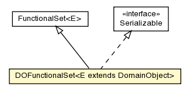

pt.ist.fenixframework.pstm
Class DOFunctionalSet<E extends DomainObject>

java.lang.Object
 dml.runtime.FunctionalSet<E>
pt.ist.fenixframework.pstm.DOFunctionalSet<E>
dml.runtime.FunctionalSet<E>
pt.ist.fenixframework.pstm.DOFunctionalSet<E>
- All Implemented Interfaces:
- Serializable
public class DOFunctionalSet<E extends DomainObject>
- extends FunctionalSet<E>
- implements Serializable
- See Also:
- Serialized Form
| Methods inherited from class java.lang.Object |
clone, equals, finalize, getClass, hashCode, notify, notifyAll, toString, wait, wait, wait |
EMPTY
public static final DOFunctionalSet EMPTY
makeFunctionalSet
protected DOFunctionalSet<E> makeFunctionalSet(int size,
jvstm.util.Cons<E> elems)
- Overrides:
makeFunctionalSet in class FunctionalSet<E extends DomainObject>
writeReplace
protected Object writeReplace()
throws ObjectStreamException
- Throws:
ObjectStreamException
Copyright © 2013. All Rights Reserved.